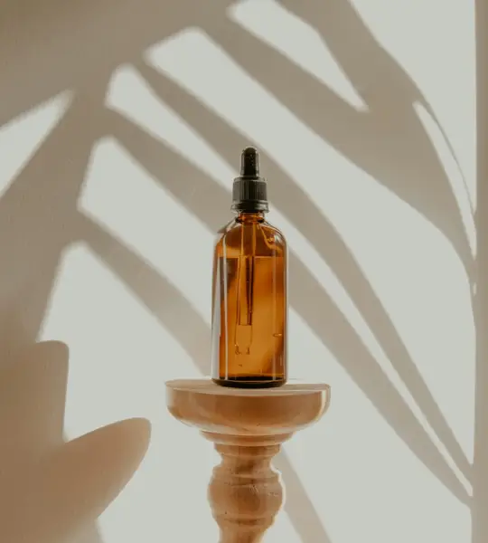

Relaxamento
Apresentação das experiências em um menu de leitura rápida.
Um modelo de site para reunir experiências de bem-estar. Explore como uma clínica pode apresentar cada opção antes do primeiro contato.
Ver experiências ↓
Apresentação das experiências em um menu de leitura rápida.
Espaço para descrever os cuidados oferecidos e o perfil de cada serviço.
Uma seção para explicar ao visitante como funciona o atendimento.
Converse com Lucas, da Lobatech, sobre um projeto para o seu negócio.
Pedir orçamento pelo WhatsApp ↗